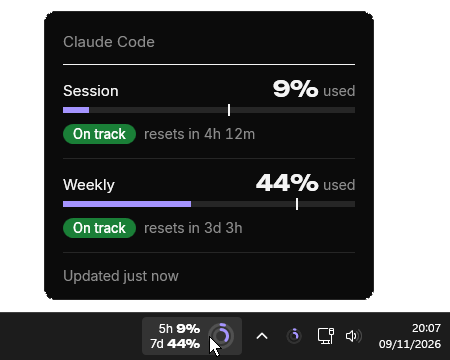
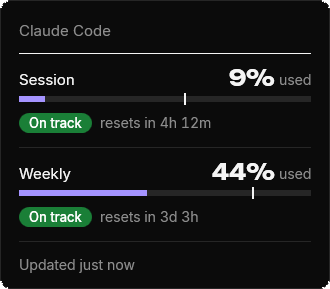
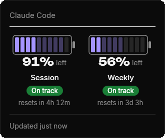
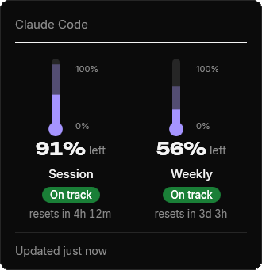

Claude Code's session and weekly limits, always in view on your taskbar.
Beside the clockHover the pill for when each limit resets, click it for the details, right-click it to change how they look.

Beside the clockHover the pill for when each limit resets, click it for the details, right-click it to change how they look.

Reading it
The five-hour limit. In the rings it's the outer one.
The weekly limit, the inner ring.
At the pace you're going, whether you reach the limit before it resets.
Bars shows what you've used, the other two what's left. Right-click the pill, then Style.



Style
Reading it
The five-hour limit. In the rings it's the outer one.
The weekly limit, the inner ring.
At the pace you're going, whether you reach the limit before it resets.
Run it
The pill appears beside the clock and fills in within seconds while Claude Code is signed in. That's it.